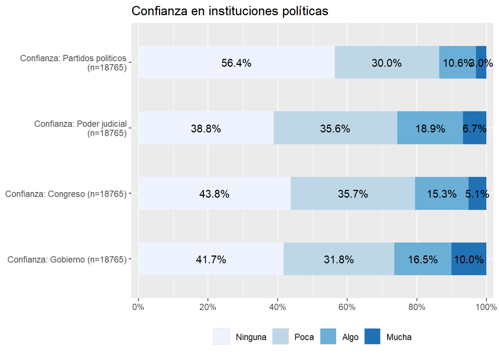
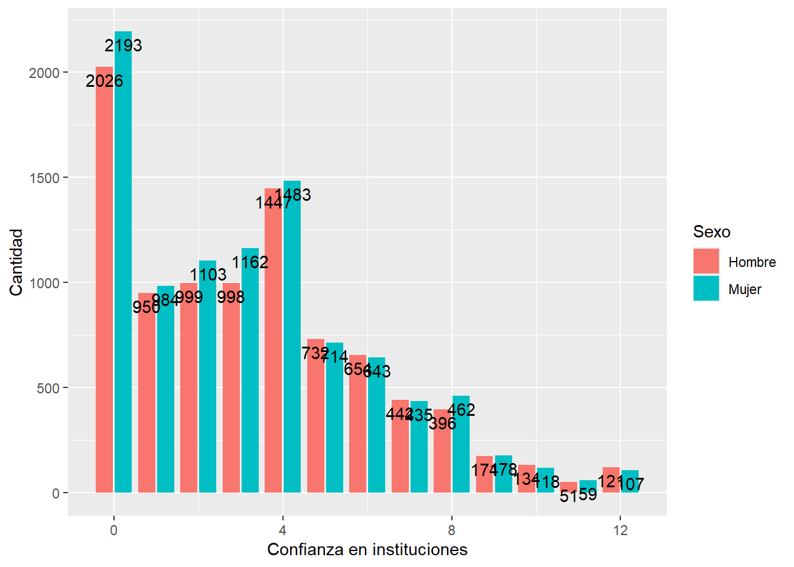
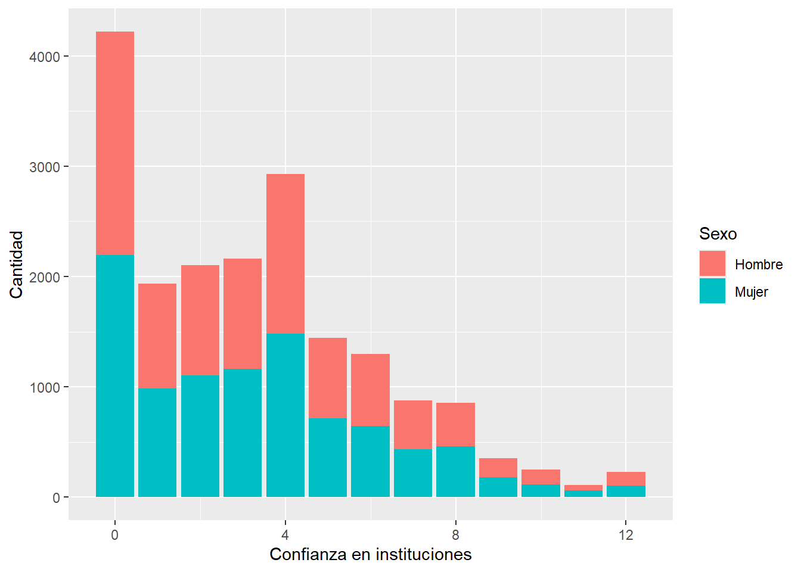

pacman::p_load(sjlabelled,
dplyr, #Manipulacion de datos
stargazer, #Tablas
sjmisc, # Tablas
summarytools, # Tablas
kableExtra, #Tablas
sjPlot, #Tablas y gráficos
sessioninfo, # Información de la sesión de trabajo
ggplot2) # Para la mayoría de los gráficosPráctica 6 Visualización de datos
Metodología I - Magíster en Ciencias Sociales
Presentación
Objetivo de la práctica
Esta práctica asume como base el desarrollo de la Práctica anterior, a la cual se hará referencia permanente. Sin embargo, en esta oportunidad la base de datos contiene los datos de los 18 países participantes en la encuesta, no solo Chile. El código específico que crea esta base está disponible acá
En la Práctica anterior se desarrolló un código de preparación de datos que generó una base de datos procesada para el análisis. En esta Práctica comenzamos con el segundo momento de procesamiento de datos, que es el análisis propiamente tal. El análisis se divide en descripción de variables y contraste de hipótesis. En esta práctica nos enfocaremos en la primera fase, que llega hasta el punto 3 del código de análisis:

Al igual que el Código de Preparación, el Código de Análisis posee una estructura definida. En este caso son 4 partes, donde las primeras son similares al código de preparación:
- Identificación y descripción general: Título, autor(es), fecha, información breve sobre el contenido del documento
- Librerías principales (de R) a utilizar en el análisis
- Datos (que provienen de los preparados en la fase anterior)
- Descripción de variables
- Tabla general de variables para la sección metodológica del reporte
- Exploración descriptiva de relaciones entre variables
- Contraste de hipótesis / inferencia estadística según la técnica que corresponda
Al final de esta práctica la idea es que cada un_ pueda avanzar hasta el punto 3 del Código de Análisis.
Código de análisis
1. Librerías
2. Cargar base de datos
Vamos a cargar la base de datos latinobarometro_proc.Rdata, que generamos durante la práctica anterior. Se puede llamar desde el directorio en que se guardó anteriormente dando la ruta completa:
load("ruta-hacia-carpeta-local/latinobarometro_proc.RData") #Cargar base de datosO también para esta práctica la podemos llamar directamente desde nuestro sitio web:
load(url("https://github.com/Kevin-carrasco/R-data-analisis/raw/main/files/data/latinobarometro_total.RData")) #Cargar base de datos- Exploración inicial general de la base de datos
names(proc_data) # Muestra los nombres de las variables de la base de datos[1] "conf_gob" "conf_cong" "conf_jud" "conf_partpol" "educacion"
[6] "sexo" "edad" "idenpa" "conf_inst" dim(proc_data) # Dimensiones[1] 20204 9En el caso de esta base, 20204 casos y 9 variables
Recordando el contenido de cada variable preparada en la práctica anterior:
[
conf_gob] = Confianza en el gobierno.[
conf_cong] = Confianza en el congreso.[
conf_jud] = Confianza en el poder judicial.[
conf_partpol] = Confianza en los partidos políticos.[
conf_inst] = Indice sumativo de confianza en instituciones políticas.[
educacion] = Nivel educacional(1 = Educacion básica, 2 = Educacion media, 3 = superior)[
sexo] = Sexo (O = Hombre; 1 = Mujer)[
edad] = ¿Cuáles su edad?
3. Descripción de variables
Los resultados referidos a descripción de variables se presentan en dos momentos del reporte de investigación:
en la sección de metodología, cuando se presentan las variables del estudio en una tabla descriptiva de variables.
en la sección de análisis, que en general comienza con una exploración de asociaciones entre variables, también conocido como análisis descriptivo.
3.1 Tabla descriptiva de variables para sección metodológica
A continuación se presentan dos opciones de generar esta tabla descriptiva de variables con distintas librerías de R.
a. Tabla descriptiva con stargazerstargazer
La función stargazer (de la librería del mismo nombre) permitirá mostrar los principales estadísticos descriptivos univariados de las variables: medidas de tendencia central (media), de dispersión (desviación estándar) y posición (mínimo, máximo, percentiles).
stargazer(proc_data,type = "text")
============================================
Statistic N Mean St. Dev. Min Max
--------------------------------------------
conf_gob 19,748 0.967 1.001 0 3
conf_cong 19,382 0.819 0.876 0 3
conf_jud 19,467 0.940 0.923 0 3
conf_partpol 19,653 0.603 0.798 0 3
edad 20,204 40.999 16.538 16 100
idenpa 20,204 365.378 260.493 32 862
conf_inst 18,768 3.303 2.851 0 12
--------------------------------------------Algunas observaciones sobre esta tabla:
La opción
type="text"permite que podamos ver los resultados directamente en la consola, de manera bastante rudimentaria. Con otras opciones que veremos más adelante se puede estilizar para su publicación.Una distinción relevante a considerar cuando se describen variables es si estas son categóricas o continuas. La definición de si una variables es tratada como categórica o continua es algo que hace el/la autor/a del reporte, sin embargo hay variables nominales como sexo que claramente corresponden a categóricas, y por lo tanto no corresponde hacer un promedio entre ambas. Sin embargo, como esta variable está codificada 0 (hombre) y 1 (mujer), en este caso lo que indica el valor de la columna promedio (Mean=0.537) es la proporción de mujeres vs hombres. En otras palabras, hay un 54% de mujeres y 46% de hombres en la muestra.
b. Tablas descriptivas con descr, librería sjmisc sjmisc::descr
La opción básica de descr es la siguiente:
sjmisc::descr(proc_data)
## Basic descriptive statistics
var type label n NA.prc mean
conf_gob numeric Confianza: Gobierno 19748 2.26 0.97
conf_cong numeric Confianza: Congreso 19382 4.07 0.82
conf_jud numeric Confianza: Poder judicial 19467 3.65 0.94
conf_partpol numeric Confianza: Partidos politicos 19653 2.73 0.60
educacion categorical Educación 20201 0.01 1.88
sexo categorical Sexo 20204 0.00 1.52
edad numeric Edad 20204 0.00 41.00
idenpa numeric idenpa 20204 0.00 365.38
conf_inst numeric Confianza en instituciones 18768 7.11 3.30
sd se md trimmed range iqr skew
1.00 0.01 1 0.83 3 (0-3) 2 0.70
0.88 0.01 1 0.71 3 (0-3) 1 0.82
0.92 0.01 1 0.84 3 (0-3) 2 0.65
0.80 0.01 0 0.47 3 (0-3) 1 1.19
0.76 0.01 2 1.85 2 (1-3) 1 0.20
0.50 0.00 2 1.53 1 (1-2) 1 -0.09
16.54 0.12 39 39.90 84 (16-100) 28 0.49
260.49 1.83 222 343.35 830 (32-862) 421 0.56
2.85 0.02 3 2.99 12 (0-12) 4 0.75En este caso utilizamos la forma librería::función (sjmisc::descr), ya que la función descr también existe en otras librerías y así nos aseguramos que la función utilizada es de esa librería específica.
Seleccionamos algunas columnas específicas con información más relevante con la opción show. Además, agregamos la función kable para obtener una tabla que luego sea fácilmente publicable en distintos formatos (a profundizar en ejercicios posteriores):
sjmisc::descr(proc_data,
show = c("label","range", "mean", "sd", "NA.prc", "n"))%>%
kable(.,"markdown")| var | label | n | NA.prc | mean | sd | range | |
|---|---|---|---|---|---|---|---|
| 2 | conf_gob | Confianza: Gobierno | 19748 | 2.2569788 | 0.9668321 | 1.0013733 | 3 (0-3) |
| 1 | conf_cong | Confianza: Congreso | 19382 | 4.0685013 | 0.8193169 | 0.8761394 | 3 (0-3) |
| 4 | conf_jud | Confianza: Poder judicial | 19467 | 3.6477925 | 0.9404633 | 0.9232323 | 3 (0-3) |
| 5 | conf_partpol | Confianza: Partidos politicos | 19653 | 2.7271827 | 0.6032158 | 0.7975983 | 3 (0-3) |
| 7 | educacion | Educación | 20201 | 0.0148485 | 1.8826296 | 0.7588656 | 2 (1-3) |
| 9 | sexo | Sexo | 20204 | 0.0000000 | 1.5215304 | 0.4995486 | 1 (1-2) |
| 6 | edad | Edad | 20204 | 0.0000000 | 40.9985151 | 16.5383434 | 84 (16-100) |
| 8 | idenpa | idenpa | 20204 | 0.0000000 | 365.3783409 | 260.4932509 | 830 (32-862) |
| 3 | conf_inst | Confianza en instituciones | 18768 | 7.1075035 | 3.3030158 | 2.8506243 | 12 (0-12) |
c. Tabla descriptiva con summarytools::dfSummary summarytools::dfSummary
Esta tercera opción nos ofrece una tabla aún más detallada, con gráficos para cada variable, las frecuencias para cada valor, y las etiquetas de las variables, por lo que es muy recomendable.
Se específica de la siguiente manera:
summarytools::dfSummary(proc_data, plain.ascii = FALSE)### Data Frame Summary
#### proc_data
**Dimensions:** 20204 x 9
**Duplicates:** 2673
----------------------------------------------------------------------------------------------------------------------------------------------------------
No Variable Label Stats / Values Freqs (% of Valid) Graph Valid Missing
---- --------------- ------------------------------- ---------------------------- -------------------- ------------------------------ ---------- ---------
1 conf_gob\ Confianza: Gobierno Mean (sd) : 1 (1)\ 0 : 8138 (41.2%)\ IIIIIIII \ 19748\ 456\
[numeric] min < med < max:\ 1 : 6228 (31.5%)\ IIIIII \ (97.7%) (2.3%)
0 < 1 < 3\ 2 : 3281 (16.6%)\ III \
IQR (CV) : 2 (1) 3 : 2101 (10.6%) II
2 conf_cong\ Confianza: Congreso Mean (sd) : 0.8 (0.9)\ 0 : 8495 (43.8%)\ IIIIIIII \ 19382\ 822\
[numeric] min < med < max:\ 1 : 6905 (35.6%)\ IIIIIII \ (95.9%) (4.1%)
0 < 1 < 3\ 2 : 2971 (15.3%)\ III \
IQR (CV) : 1 (1.1) 3 : 1011 ( 5.2%) I
3 conf_jud\ Confianza: Poder judicial Mean (sd) : 0.9 (0.9)\ 0 : 7550 (38.8%)\ IIIIIII \ 19467\ 737\
[numeric] min < med < max:\ 1 : 6886 (35.4%)\ IIIIIII \ (96.4%) (3.6%)
0 < 1 < 3\ 2 : 3671 (18.9%)\ III \
IQR (CV) : 2 (1) 3 : 1360 ( 7.0%) I
4 conf_partpol\ Confianza: Partidos politicos Mean (sd) : 0.6 (0.8)\ 0 : 11097 (56.5%)\ IIIIIIIIIII \ 19653\ 551\
[numeric] min < med < max:\ 1 : 5857 (29.8%)\ IIIII \ (97.3%) (2.7%)
0 < 0 < 3\ 2 : 2099 (10.7%)\ II \
IQR (CV) : 1 (1.3) 3 : 600 ( 3.1%)
5 educacion\ Educación 1\. Educacion basica\ 7141 (35.3%)\ IIIIIII \ 20201\ 3\
[factor] 2\. Educacion media\ 8290 (41.0%)\ IIIIIIII \ (100.0%) (0.0%)
3\. Educacion superior 4770 (23.6%) IIII
6 sexo\ Sexo 1\. Hombre\ 9667 (47.8%)\ IIIIIIIII \ 20204\ 0\
[factor] 2\. Mujer 10537 (52.2%) IIIIIIIIII (100.0%) (0.0%)
7 edad\ Edad Mean (sd) : 41 (16.5)\ 81 distinct values : : :\ 20204\ 0\
[numeric] min < med < max:\ : : : \ \ .\ (100.0%) (0.0%)
16 < 39 < 100\ : : : : : :\
IQR (CV) : 28 (0.4) : : : : : : .\
: : : : : : : .
8 idenpa\ Mean (sd) : 365.4 (260.5)\ 18 distinct values \ \ \ \ \ \ \ \ \ \ \ \ :\ 20204\ 0\
[numeric] min < med < max:\ : : . \ \ \ \ \ \ :\ (100.0%) (0.0%)
32 < 222 < 862\ : : : . \ \ \ \ : \ \ \ \ .\
IQR (CV) : 421 (0.7) : : : : \ \ . : \ \ \ \ :\
: : : : \ \ : : \ \ \ \ :
9 conf_inst\ Confianza en instituciones Mean (sd) : 3.3 (2.9)\ 13 distinct values :\ 18768\ 1436\
[numeric] min < med < max:\ :\ (92.9%) (7.1%)
0 < 3 < 12\ : \ \ \ \ .\
IQR (CV) : 4 (0.9) : . : : :\
: : : : : . . . \ \ .
----------------------------------------------------------------------------------------------------------------------------------------------------------Es muy ancha para visualizar bien en la consola de R, pero en su versión más definitiva de publicación se verá así:
view(dfSummary(proc_data, headings=FALSE))| No | Variable | Label | Stats / Values | Freqs (% of Valid) | Graph | Valid | Missing | ||||||||||||||||||||||||||||
|---|---|---|---|---|---|---|---|---|---|---|---|---|---|---|---|---|---|---|---|---|---|---|---|---|---|---|---|---|---|---|---|---|---|---|---|
| 1 | conf_gob [numeric] | Confianza: Gobierno |
|
|
 |
19748 (97.7%) | 456 (2.3%) | ||||||||||||||||||||||||||||
| 2 | conf_cong [numeric] | Confianza: Congreso |
|
|
 |
19382 (95.9%) | 822 (4.1%) | ||||||||||||||||||||||||||||
| 3 | conf_jud [numeric] | Confianza: Poder judicial |
|
|
 |
19467 (96.4%) | 737 (3.6%) | ||||||||||||||||||||||||||||
| 4 | conf_partpol [numeric] | Confianza: Partidos politicos |
|
|
 |
19653 (97.3%) | 551 (2.7%) | ||||||||||||||||||||||||||||
| 5 | educacion [factor] | Educación |
|
|
 |
20201 (100.0%) | 3 (0.0%) | ||||||||||||||||||||||||||||
| 6 | sexo [factor] | Sexo |
|
|
 |
20204 (100.0%) | 0 (0.0%) | ||||||||||||||||||||||||||||
| 7 | edad [numeric] | Edad |
|
81 distinct values |  |
20204 (100.0%) | 0 (0.0%) | ||||||||||||||||||||||||||||
| 8 | idenpa [numeric] |
|
18 distinct values |  |
20204 (100.0%) | 0 (0.0%) | |||||||||||||||||||||||||||||
| 9 | conf_inst [numeric] | Confianza en instituciones |
|
13 distinct values |  |
18768 (92.9%) | 1436 (7.1%) |
Generated by summarytools 1.0.1 (R version 4.3.2)
2024-06-06
Nota sobre casos perdidos (NAs) na.omit(data)
Hasta ahora hemos mantenido los casos perdidos en la base de datos, ya que son importantes de reportar en la tabla general de variables. Sin embargo, de aquí en adelante se recomienda trabajar solo con casos completos, es decir, sacar los casos perdidos. El quitar los casos perdidos de una base de datos es muy simple con la función na.omit, pero para tomar precauciones y asegurarse que funciona se recomienda el siguiente procedimiento:
- respaldar la base de datos original en el espacio de trabajo (por si queremos en adelante realizar algún análisis referido a casos perdidos), la dejaremos con el nombre proc_data_original.
- contamos el número de casos con el comando
dim - contamos el número de casos perdidos con
sum(is.na(proc_data)) - borramos los casos perdidos con
proc_data <-na.omit(proc_data) - contamos nuevamente con
dimpara asegurarnos que se borraron - y por temas de funcionamiento de R, al realizar la operación de sacar casos perdidos, se borra toda la información de las etiquetas (labels), así que las recuperamos de la base original con el comando
copy_labels, de la libreríasjlabelled.
proc_data_original <-proc_data
dim(proc_data)[1] 20204 9sum(is.na(proc_data))[1] 4005proc_data <-na.omit(proc_data)
dim(proc_data)[1] 18765 9proc_data <-sjlabelled::copy_labels(proc_data,proc_data_original)3.2 Visualización de variables
Para visualizar variables mediante gráficos, en R el paquete más comúnmente usado es ggplot2. La lógica detrás de este paquete es que funciona por capas.
ggplot()
ggplot(proc_data, aes(x = conf_inst))
proc_data %>% ggplot(aes(x = conf_inst)) +
geom_bar()
proc_data %>% ggplot(aes(x = conf_inst)) +
geom_bar(fill = "coral")
proc_data %>% ggplot(aes(x = conf_inst)) +
geom_bar(fill = "coral")+
labs(title = "Confianza en instituciones",
x = "Confianza en instituciones",
y = "Frecuencia")
# Crear el gráfico usando ggplot2
graph1 <- proc_data %>% ggplot(aes(x = conf_inst)) +
geom_bar(fill = "coral")+
labs(title = "Confianza en instituciones",
x = "Confianza en instituciones",
y = "Frecuencia") +
geom_text(aes(label = ..count..), stat = "count", colour = "black",
vjust = 1.5, position = position_dodge(.9)) + # agregamos freq de cada barra por grupo
theme_bw()
graph1Warning: The dot-dot notation (`..count..`) was deprecated in ggplot2 3.4.0.
ℹ Please use `after_stat(count)` instead.
# y lo podemos guardar:
ggsave(graph1, file="output/graphs/graph1.png")Saving 7 x 5 in image3.3 Exploración de asociación entre variables
Dado que las hipótesis de investigación corresponden a asociación entre variables, antes de realizar el contraste de hipótesis se suele presentar un análisis descriptivo que explora las asociaciones entre variables.
La forma de explorar las asociaciones entre variables dependen de la naturaleza de las variables que se asocian:
- Variables categóricas: tabla de contingencia
- Variable categórica y continua: tabla de promedios por cada categoría
En esta sección también es muy relevante la visualización de datos mediante gráficos, por lo que incluiremos algunos.
El uso tanto de tablas como de gráficos en el reporte queda a discreción del/a autor/a. La pregunta que orienta esta decisión es: ¿Me permite enriquecer la discusión de los resultados en relación a las hipótesis planteadas?
Tablas de contingencia para variables categóricas
Para tablas de contingencia categóricas utilizaremos la función sjt.xtab, de la librería sjPlot. Veamos primero una especificación simple: sjPlot::sjt.xtab
sjt.xtab(proc_data$educacion, proc_data$sexo)| Educación | Sexo | Total | |
|---|---|---|---|
| Hombre | Mujer | ||
| Educacion basica | 3027 | 3216 | 6243 |
| Educacion media | 3845 | 4041 | 7886 |
| Educacion superior | 2252 | 2384 | 4636 |
| Total | 9124 | 9641 | 18765 |
| χ2=0.108 · df=2 · Cramer's V=0.002 · p=0.948 | |||
Al ejecutar el comando, el resultado aparece automáticamente en el visor de RStudio. A esta tabla podemos también agregar porcentajes de filas y/o columnas, según sea lo más relevante analizar. En general se recomienda agregar solo un porcentaje, de otra manera la tabla se satura de información. Además, vamos a quitar el pie de la tabla (conviene dejarlo solo si hay hipótesis asociadas al cruce simple entre las dos variables).
sjt.xtab(proc_data$educacion, proc_data$sexo,
show.col.prc=TRUE,
show.summary=FALSE,
encoding = "UTF-8",
file="output/tables/tabla-contingencia.html")| Educación | Sexo | Total | |
| Hombre | Mujer | ||
| Educacion basica | 3027 33.2 % |
3216 33.4 % |
6243 33.3 % |
| Educacion media | 3845 42.1 % |
4041 41.9 % |
7886 42 % |
| Educacion superior | 2252 24.7 % |
2384 24.7 % |
4636 24.7 % |
| Total | 9124 100 % |
9641 100 % |
18765 100 % |
Tablas de promedio de variable continua por una categóricas
En ejemplo vamos a explorar datos de nuestra variable de confianza en instituciones conf_inst por los niveles educacionales educacion.
Una forma rápida de explorar esto es mediante la función tapply, que nos entrega de manera simple el promedio de una variable por otra:
tapply(proc_data$conf_inst, proc_data$educacion, mean) Educacion basica Educacion media Educacion superior
3.396604 3.229647 3.303063 Aquí vemos en promedio de conf_inst para cada uno de los 3 niveles de la variable educación educacion. Si se estima conveniente este tipo de cruces se puede representar también en una tabla con más opciones de información y también de publicación. Para esto utilizaremos una función algo más compleja de la librería dplyr.dplyr Esta librería permite aplicar una serie de funciones concatenadas y enlazadas mediante el operador %>%. El sentido de cada función aparece comentado abajo:
proc_data %>% # se especifica la base de datos
select(conf_inst,educacion) %>% # se seleccionan las variables
dplyr::group_by(Educación=sjlabelled::as_label(educacion)) %>% # se agrupan por la variable categórica y se usan sus etiquetas con as_label
dplyr::summarise(Obs.=n(),Promedio=mean(conf_inst),SD=sd(conf_inst)) %>% # se agregan las operaciones a presentar en la tabla
kable(., format = "markdown") # se genera la tabla| Educación | Obs. | Promedio | SD |
|---|---|---|---|
| Educacion basica | 6243 | 3.396604 | 3.038681 |
| Educacion media | 7886 | 3.229648 | 2.751494 |
| Educacion superior | 4636 | 3.303063 | 2.749961 |
Esta asociación también se puede representar de manera más simple con un gráfico, en este caso de cajas o boxplot mediante la función geom_boxplot de gplot2:
graph <- ggplot(proc_data, aes(x =educacion, y = conf_inst)) +
geom_boxplot() +
labs(x = "Educación", y = "Confianza en instituciones") +
theme_minimal()
graph
# y lo podemos guardar:
ggsave(graph, file="output/graphs/graph.png")Saving 7 x 5 in imageSin embargo, al ser los promedios similares no permite ver demasiadas diferencias… Probemos otro
ggplot(proc_data, aes(x =educacion, y = conf_inst)) +
geom_point() +
labs(x = "Educación", y = "Confianza en instituciones") +
theme_minimal()
En este gráfico cada punto representa una observación para cada categoría. Por lo tanto, al existir tantos valores difernetes en cada categoría, el gráfico tampoco nos presenta información sustantiva ¿Qué necesitamos hacer? Necesitamos obtener exactamente los datos que queremos graficar, esto es, el promedio por cada categoría. Volvamos a group_by
datos <- proc_data %>% group_by(educacion) %>%
summarise(promedio = mean(conf_inst))
ggplot(datos, aes(x =educacion, y = promedio)) +
geom_point() +
labs(x = "Educación", y = "Confianza en instituciones") +
theme_minimal()+
ylim(0, 12)
Este gráfico entrega un poco más de información, pero al ver pocas diferencias en el promedio de cada categoría no se logran evidenciar
proc_data$idenpa <- factor(proc_data$idenpa,
labels=c("Argentina",
"Bolivia",
"Brasil",
"Chile",
"Colombia",
"Costa Rica",
"Cuba",
"República Dominicana",
"Ecuador",
"El Salvador",
"Guatemala",
"Honduras",
"México",
"Nicaragua",
"Panamá",
"Paraguay",
"Uruguay",
"Venezuela"),
levels=c("32",
"68",
"76",
"152",
"170",
"188",
"214",
"218",
"222",
"320",
"340",
"484",
"558",
"591",
"600",
"604",
"858",
"862"))
graph_box <- ggplot(proc_data, aes(x = idenpa, y = conf_inst)) +
geom_boxplot() +
labs(x = "País", y = "Confianza en instituciones") +
theme_minimal()+
theme(axis.text.x = element_text(angle = 45, hjust = 1)) # Rotar las etiquetas del eje x
graph_box
# y lo podemos guardar:
ggsave(graph_box, file="output/graphs/graph.png")Saving 7 x 5 in imageDe manera alternativa, podemos seguir explorando nuestros datos con otros gráficos
Para varias variables univariadas, tipo escala likert, una buena alternativa es el paquete sjPlot, en este caso la función plot_stackfrq:
graph2 <- sjPlot::plot_stackfrq(dplyr::select(proc_data, conf_gob,
conf_cong,
conf_jud,
conf_partpol),
title = "Confianza en instituciones políticas") +
theme(legend.position="bottom")
graph2
# Guardamos
ggsave(graph2, file="output/graphs/graph2.png")Saving 7 x 5 in imagePara asociación de dos variables, retomemos el primer gráfico:
graph3 <- proc_data %>% ggplot(aes(x = conf_inst, fill = sexo)) +
geom_bar(position = "dodge2") +
xlab("Confianza en instituciones") +
ylab("Cantidad") +
labs(fill="Sexo")+
scale_fill_discrete(labels = c('Hombre','Mujer'))+
geom_text(aes(label = ..count..), stat = "count", colour = "black",
vjust = 1.5, position = position_dodge(.9)) # agregamos freq de cada barra por grupo
graph3
# Guardamos
ggsave(graph3, file="output/graphs/graph3.png")Saving 7 x 5 in imageuna forma alternativa:
proc_data %>% ggplot(aes(x = conf_inst, fill = sexo)) +
geom_bar() +
xlab("Confianza en instituciones") +
ylab("Cantidad") +
labs(fill="Sexo")+
scale_fill_discrete(labels = c('Hombre','Mujer'))
otra forma alternativa:
proc_data %>% ggplot(aes(x = conf_inst)) +
geom_bar() +
xlab("Confianza en instituciones") +
ylab("Cantidad")+
facet_wrap(~sexo)+
geom_text(aes(label = ..count..), stat = "count", colour = "white",
vjust = 1.5, position = position_dodge(.9)) # agregamos freq de cada barra por grupo
Para variables continuas
graph4 <- ggplot(proc_data, aes(x = as.numeric(edad))) +
geom_histogram(binwidth=0.6, colour="black", fill="yellow") +
theme_bw() +
xlab("Edad") +
ylab("Cantidad")
graph4 
# Guardamos
ggsave(graph4, file="output/graphs/graph4.png")Saving 7 x 5 in imagey lo podemos complicar un poco más…
Asociación entre tres variables
con facet_wrap dividimos el gráfico en distintos paneles, según la cantidad de categorías que tenga una variable
datos <- proc_data %>% group_by(educacion, sexo) %>%
summarise(promedio = mean(conf_inst))`summarise()` has grouped output by 'educacion'. You can override using the
`.groups` argument.ggplot(datos, aes(x =educacion, y = promedio)) +
geom_point() +
labs(x = "Educación", y = "Confianza en instituciones") +
theme_bw()+
ylim(0, 12)+
facet_wrap(~sexo)
o alternativamente…
ggplot(datos, aes(x =sexo, y = promedio)) +
geom_point() +
labs(x = "Sexo", y = "Confianza en instituciones") +
theme_bw()+
ylim(0, 12)+
facet_wrap(~educacion)
Probemos otras agrupaciones. Por ejemplo, categorizar edad en grupos para estimar promedios grupales. Una función clave para lograr esto puede ser case_when de dplyr, combinándolo con mutate. Es decir, crear una nueva variable a partir de un condicional
summary(proc_data$edad) Min. 1st Qu. Median Mean 3rd Qu. Max.
16.00 26.00 38.00 40.53 53.00 100.00 proc_data <- proc_data %>%
mutate(edad_groups = case_when(edad >=16 & edad<=25 ~ "Entre 16 y 25 años",
edad >=26 & edad<=39 ~ "Entre 26 y 39 años",
edad >=40 & edad<=65 ~ "Entre 40 y 65 años",
edad >65 ~ "Más de 65 años"))
table(proc_data$edad_groups)
Entre 16 y 25 años Entre 26 y 39 años Entre 40 y 65 años Más de 65 años
4304 5487 7390 1584 Ahora creamos este gráfico
datos <- proc_data %>% group_by(educacion, edad_groups) %>%
summarise(promedio = mean(conf_inst))`summarise()` has grouped output by 'educacion'. You can override using the
`.groups` argument.ggplot(datos, aes(x =educacion, y = promedio)) +
geom_point() +
labs(x = "Educación", y = "Confianza en instituciones") +
theme_bw()+
ylim(0, 7)+
facet_wrap(~edad_groups)
y lo podemos seguir complicando, por ejemplo, agregando otra variable en el gráfico
datos <- proc_data %>% group_by(educacion, sexo, edad_groups) %>%
summarise(promedio = mean(conf_inst))`summarise()` has grouped output by 'educacion', 'sexo'. You can override using
the `.groups` argument.ggplot(datos, aes(x =educacion, y = promedio, color=sexo)) +
geom_point() +
labs(x = "Educación", y = "Confianza en instituciones") +
theme_bw()+
ylim(0, 7)+
facet_wrap(~edad_groups)
Con ‘color’ (gráfico anterior) solo se diferencia la variable según color. Con ‘shape’ (gráfico siguiente) también se diferencia según la forma de la representación
ggplot(datos, aes(x =educacion, y = promedio, color=sexo, shape=sexo)) +
geom_point() +
labs(x = "Educación", y = "Confianza en instituciones") +
theme_bw()+
ylim(0, 7)+
facet_wrap(~edad_groups)
Y tenemos aún un problema… las categorías del eje x se están solapando. Eso lo podemos corregir modificando el ángulo del eje x.
ggplot(datos, aes(x = educacion, y = promedio, color = sexo, shape = sexo)) +
geom_point() +
labs(x = "Educación", y = "Confianza en instituciones") +
theme_bw() +
ylim(0, 7) +
facet_wrap(~edad_groups) +
theme(axis.text.x = element_text(angle = 45, hjust = 1))